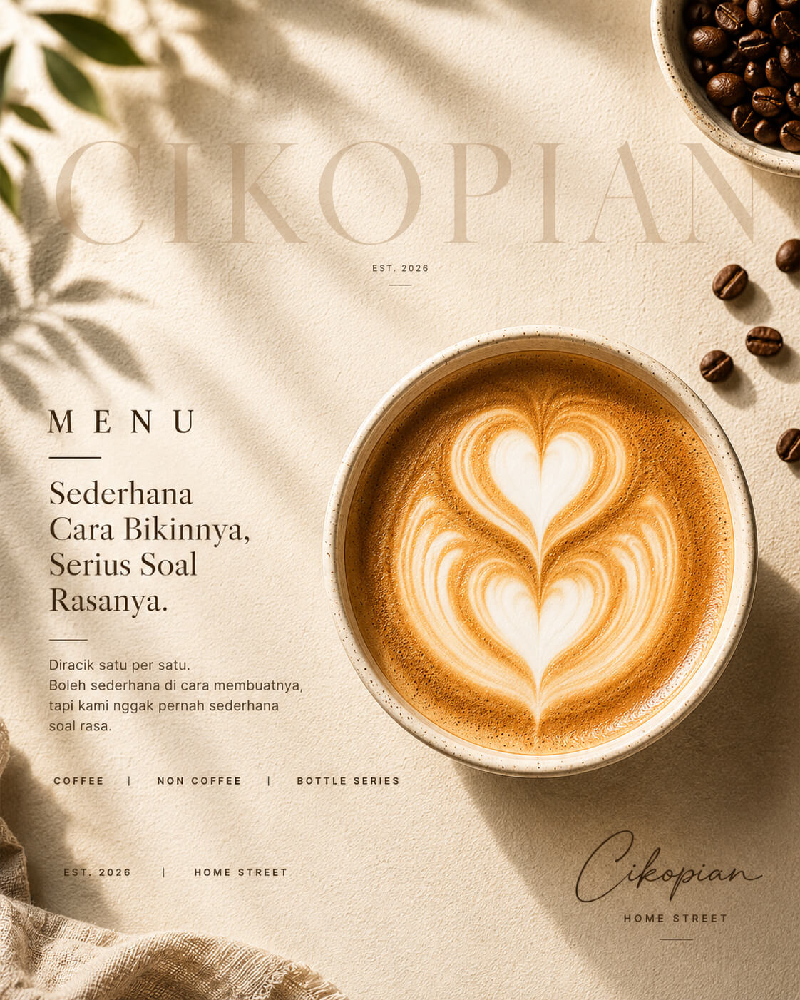

Ceritanya Gini
Ngga pernah ada rencana buka coffee shop.
Awalnya cuma racik kopi buat sendiri, iseng-iseng doang. Terus tetangga nitip, temen nitip, terus temennya temen ikutan nitip. Ngga pernah niat bikin "brand kopi" apalagi mikirin logo — orang-orang aja yang keterusan nyoba.
Satu hal yang dipegang dari awal sampai sekarang: rasanya ngga boleh berubah-ubah. Gelas yang bikin orang balik lagi harus sama persis rasanya sama gelas yang kamu pesan hari ini — itu aja yang penting.
Sederhana cara bikinnya, serius soal rasanya. 🤎